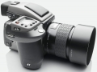

器材库 > 大中画幅可换镜头数码相机 > H4D-31

规格总览
产品类型
大中画幅可换镜头数码相机
发布日期
2010-09-23
厂家推荐价格
9,995.00 （欧元）
影像规格
影像传感器
CCD
有效像素
3100万
镜头和对焦
兼容镜头
HC/HCD系列镜头
曝光控制
测光模式
中央重点测光, 点测光, 中央点测光
机身规格
颜色
黑色
其它
工作温度
0-45℃
附件
Phocus for Mac and Windows
saga19xx2013-06-19 13:494.56 分
操作性 5.00功能性 4.50美观性 5.00趣味性 4.00耐用性 5.00性价比 5.00解像力 4.00色彩还原 4.00
产品图 / 样片
哈苏H4D-31